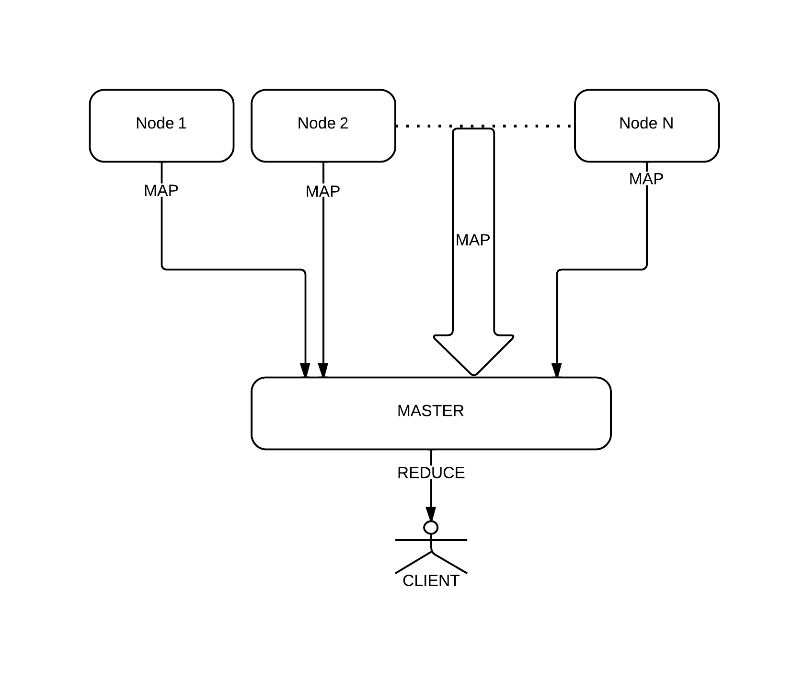

Rozproszona baza szeregów czasowych
na węzłach obliczeniowych CUDA
Karol Dzitkowski
Jakub Dutkowski
Tomasz Janiszewski
Plan prezentacji
- Temat pracy inżynierskiej
- Używane technologie
- Api dla klientów
- Struktura systemu
- Styl "Map-Reduce" w projekcie
- Wprowadzenie do języka GO
- Wzorce języka GO
- Struktura i implementacja serwera głównego
Temat pracy inżynierskiej
- Baza danych szeregów czasowych
- Przechowywanie danych w pamięci kart graficznych
- Rozproszona architektura
- Wykorzystanie wydajności kart graficznych
ZAŁOŻENIA PRACY
- Rekordy składające się z metryki, tagu, czasu oraz wartości liczbowej (float)
- Duże obciążenie systemu wpływającymi danymi
- Realizowanie zapytań w czasie rzeczywistym
- Flitrowanie oraz agregacja danych
- Skalowalność systemu
CELE
- Prezentowanie wyników zapytań na bardzo dużym zbiorze danych
- Zapis dużych strumieni danych z wielu źródeł w czasie rzeczywistym
Używane technologie
- Język programowania C/C++
- Język programowania GO
- NVIDIA CUDA
- BOOST
- THRUST
CUDA to opracowana przez firmę NVIDIA równoległa architektura obliczeniowa, która zapewnia radykalny wzrost wydajności obliczeń, dzięki wykorzystaniu mocy układów GPU.
ŚRODOWISKA I PROGRAMY
- Nvidia Nsight Eclipse Edition - developer.nvidia.com/nsight
- JetBRAINS IntelliJ IDEA - jetbrains.com/idea
- IntelliJ golang.org support plugin plugins.jetbrains.com/plugin/5047
- Jenkins - jenkins-ci.org
- Redmine - redmine.org
Api dla klientów
API zrealizowane zgodnie z wzorcem REST. Komunikacja klienta z serwerem głównym za pomącą żądań HTTP np. http://ddjDB.mini.pw.edu.pl/data/
Dane przesyłane w formacie JSON
REST API jest wykorzystywany przez wiele frameworków aplikacji internetowych np. Ruby on Rails, Django czy Apache Sling. Parametry wywołania danej usługi umieszczane są w ścieżce adresu URL.
Przykłady:
http://ddjDB.mini.pw.edu.pl/ddj_data/metric/5/agregated/summed
.../ddj_data/all/filtered/timeFrom/22222/timeFrom/33333
Struktura systemu
-
System będzie składał się z dwóch podsystemów:
- Serwera głównego zwanego Master
- Systemu działającego na serwerach bazodanowych
Komunikacja pomiędzy serwerem głównym a węzłami będzie odbywać się za pomocą TCP/IP po sieci wewnętrznej. Klienci komunikują się tylko z serwerem głównym, który wystawia im REST'owe API.
MASTER (serwer główny) zajmuje się:
- odbieraniem zapytań od klientów, kolejkowaniem ich oraz zlecaniem ich wykonania przez węzły.
- zarządzaniem oraz monitorowaniem węzłów, sprawdzając ich parametry oraz stan.
- Nadzorowaniem wykonania wszystkich zapytań oraz zbieraniem ich wyników.
- Wykonywaniem agregacji otrzymanych wyników i przekazywaniem gotowych odpowiedzi do klienta.
NODE (węzeł) zajmuje się:
- składowaniem otrzymanych danych na odpowiednich kartach graficznych NVIDIA.
- wykonywaniem zleconych przez serwer główny zadań na danych zawartych w posiadanych kartach GPU.
- pre-agregacją wyników zadań otrzymanych z wielu kart GPU, które może posiadać
- przekazywaniem swojego stanu do serwera głównego i utrzymywaniem z nim połączenia
AGREGOWANIE I FILTRACJA DANYCH
Baza danych będzie zwracała dane z zadanych okresów czasu oraz dla wyspecyfikowanych kwalifikatorów (metryka, tag). Dane zwracane będą jako lista rekordów zawierających tag, serię, czas i wartość lub jako lista wartości zagregowana przy pomocy predefiniowanych funkcji.
PRZEWIDYWANE FUNKCJE AGREGUJĄCE
- sumowanie
- średnia
- max i min
- odchylenie standardowe
- wariancja
- całka
- różniczka
- histogram
- liczba rekordów o wartościach z przedziału
PRACA W CZASIE RZECZYWISTYM
Wszelkie operacje na danych będą wykonywane w czasie rzeczywistym to znaczy nie będzie wykonywana żadna wstępna agregacja danych, a wszystkie zadania będą wykonywane na danych aktualnie znajdujących się na GPU. Istnieje więc możliwość że część danych nie zostanie uwzględniona w przygotowywaniu odpowiedzi dla użytkownika gdyż jeszcze nie zdążą być zapisane na karcie pomimo że zostały przyjęte do systemu.
PRACA BADAWCZA
Ponieważ jest to praca “badawcza” program będzie w łatwy sposób konfigurowalny i dający możliwość badania uzyskanej przepustowości zarówno ze względu na ilość przepływających zadań jak i zapytań. Będziemy badać wydajność takiego rozwiązania bazy danych.
"Map-Reduce"
Zaletą systemu będzie implementacja modelu programowania Map-Reduce, jako że jest to rozproszona baza danych. Systemy typu "map-reduce" są coraz częściej stosowane w zastosowaniach bazodanowych i charakteryzują się ogromną skalowalnością.
SCHEMAT MAP-REDUCE W PROJEKCIE
DZIAŁANIE
- Węzły wyszukują w swojej bazie odpowiednie fragmenty danych i wykonują na nich operację Map tj. filtrują dane pod kątem pewnych kryteriów.
- Jeśli to możliwe węzły wykonują dwie operacje Compose (Redukcja na poziomie węzłów)
- Pierwsza operacja Compose odbywa się jako agregacja danych z jednej karty GPU (wykonywana na tej karcie z użyciem CUDA)
- Druga operacja Compose wykonuje się na węźle jako agregacja wyników uzyskanych ze wszystkich posiadanych kart
- Ostatnim etapem jest wykonanie operacji Reduce na wynikach uzyskanych ze wszystkich węzłów
Wprowadzenie do języka GO

GO - CECHY
- Młody i nowoczesny język programowania - Marzec 2012
- Obiektowy (ale nie tak zwyczajnie)
- Statycznie typowany
- Kompilowany do asemblera
- "Odśmiecany" (Garbage Collected)
- Wielowątkowość i synchronizacja ma wbudowana w język
- Kompozycja poprzez interfejsy
- Open Source na licencji BSD
HELLO WORLD
package main
import "fmt"
func main() {
fmt.Println("Hello World!")
}
SKŁADNIA
var name int32 = 10 // var nazwa typ = wartość
x := 5.5 // deklaracja x z wartością 5.5 i odpowiednim typem
y := foo(x) // deklaracja y z wartością i typem wyniku foo(x)
import "fmt" // zamiast #include - powoduje dołączenie paczki o nazwie fmt
func nazwa_funkcji(nazwa_parametru typ_parametru, ...) (typ_wyniku1, ..., typ_wynikuN) {...}
return x + y, x-y // zwracanie wielu zmiennych
fmt.Println(add(42, 13)) // wywołanie funkcji Println z pakietu fmt
Przykład:
package main
import "fmt"
func addAndsub(x int, y int) (int, int) {
return x + y, x-y
}
func main() {
fmt.Println(addAndsub(40, 10))
}
// Tworzenie struktury o dwóch polach publicznych typu float 64-bit
type Vertex struct {
X, Y float64
}
// Tworzenie interfejsu z funkcją Abs() zwracającą float64
type Abser interface {
Abs() float64
}
// Jeśli Vertex posiada funkcję wymaganą przez interfejs
// to automatycznie go implementuje (Vertex implementuje Abser)
func (v *Vertex) Abs() float64 {
return math.Sqrt(v.X*v.X + v.Y*v.Y)
}
Przykład:
func main() {
var a Abser
v := Vertex{3, 4}
a = &v
fmt.Println(a.Abs())
}
c := foo("boring!") for i := 0; i < 5; i++ { fmt.Printf("You say: %q\n", <-c) } fmt.Println("You're boring; I'm leaving.")
func boring(msg string) <-chan string { c := make(chan string) go func() { for i := 0; ; i++ { c <- fmt.Sprintf("%s %d", msg, i) time.Sleep(time.Duration(rand.Intn(1e3)) * time.Millisecond) } }() return c }
func main() { c := foo("A") for { select { case s := <-c: fmt.Println(s) case <-time.After(1 * time.Second): fmt.Println("You're too slow.") return } } }
func main() { c := foo("A") timeout := time.After(5 * time.Second) for { select { case s := <-c: fmt.Println(s) case <-timeout: fmt.Println("You talk too much.") return } } }
type Balancer struct {
pool Pool
done chan *Worker
}
func (b *Balancer) Balance(work <-chan restApi.RestRequest) {
log.Info("Task manager balancer started")
for {
select {
case req := <-work:
b.dispatch(req)
case w := <-b.done:
b.completed(w)
}
}
}
func (b *Balancer) dispatch(req restApi.RestRequest) {
w := heap.Pop(&(b.pool)).(*Worker)
log.Fine("Dispach request to ", w)
w.reqChan <- req
w.pending++
heap.Push(&(b.pool), w)
}
func (b *Balancer) completed(w *Worker) {
w.pending--
heap.Remove(&(b.pool), w.index)
heap.Push(&(b.pool), w)
}